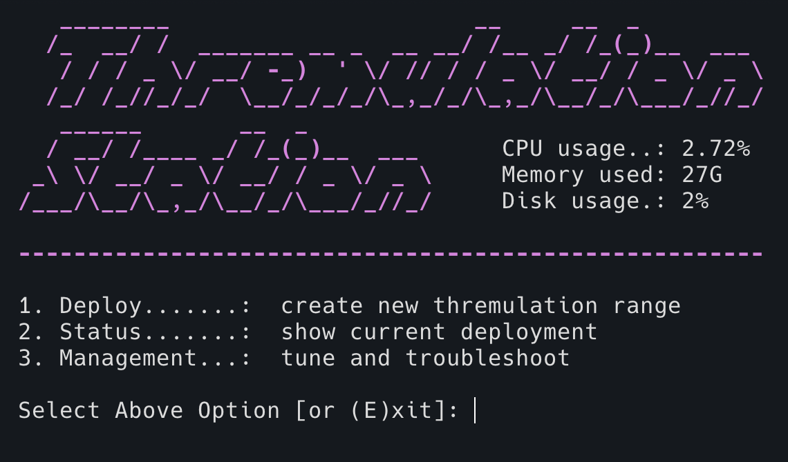
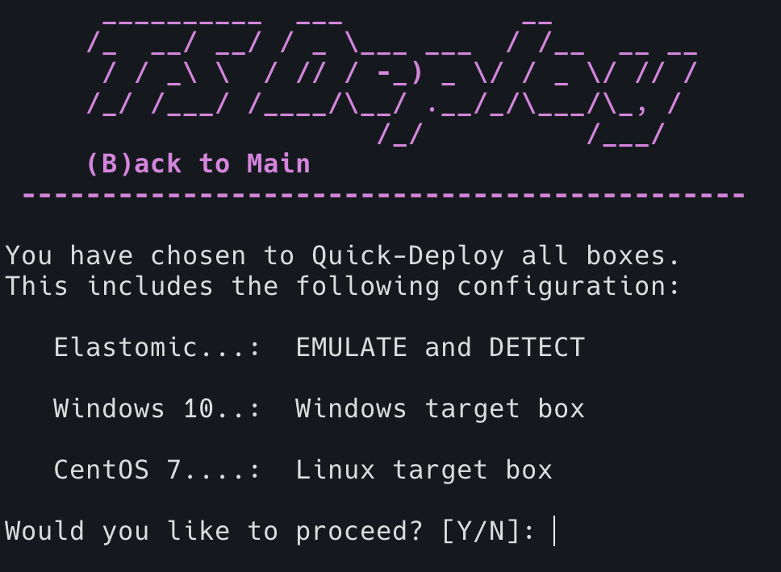

Deployment
Once you have all the requirements installed and repo staged locally, it's time to deploy your threat hunting range.
Introduction to Station Control

Thremulation Station comes with a terminal control interface called stationctl. It is used to perform most major tasks within the environment. The main features provided are:
stationctlis a script located in the vagrant/ directory, and must be executed from that folder to work properly
TODO IMG
- configure and deploy a new local range
- check the status of a current range
- management tasks on a current range
- reloading / rebuilding boxes
- data reset (clearing indexes)
- various troubleshooting steps
Let's continue setting up a local testing range by moving into the deployment steps.
Deployment Options
In the previous section you installed requirements and cloned the repo locally. Let's get this thing going!
-
Move into this repo's vagrant directory. Example:
cd thremulation-station/vagrant -
Run the
stationctlcontrol script. Example: $./stationctl -
Select option
1and<enter>to move into the deploy menu

Here you can see the main menu and it's options. From here, you have 2 paths you can take...
Quick Deployment
A Quick Deployment is the first and fastest option. It enables all VMs included in the range, meaning the control machine and both a windows and linux target box.

-
Select option
1and<enter> -
Then confirm this configuration to kick things off. This will download boxes / spin up / provision all boxes.
-
Get yourself some fresh coffee, this will take 10-20 min depending on your connection.
Note: This is a bandwidth-intensive task that may take a while. But take heart, this will only happen the first time you deploy. Get some coffee, and drink you cup slowly, savoring these infrequently quiet moments.
Note: Note: If you don't drink coffee, I don't trust you and I don't want you to have any part of this.
Custom Deployment
TODO